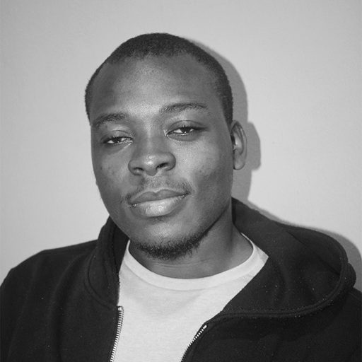
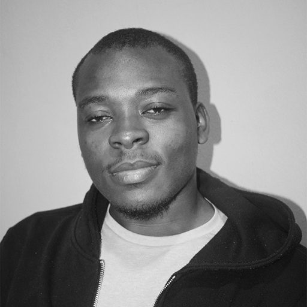
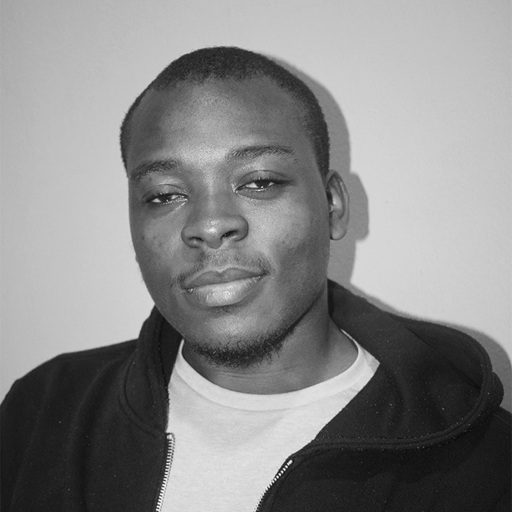

Home
Apply
Table
Media
About Me
This page showcases different HTML media elements.
Responsive Image
Github profile image
Linked-in profile image

My image
 Github profile image
Github profile image
 Linked-in profile image

My image
Linked-in profile image

My image